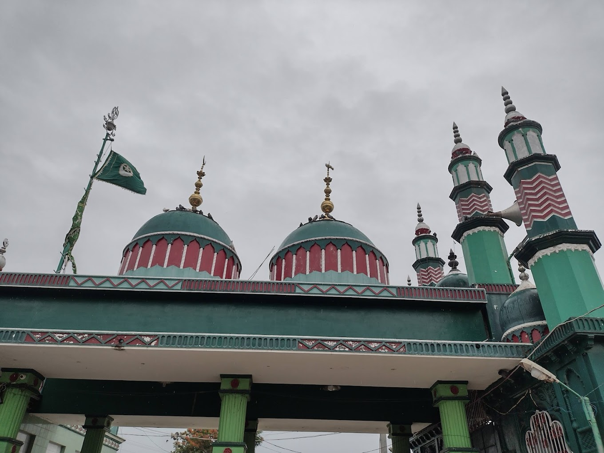

Kasmuru Dargah

Temple Name: Kasmuru Dargah
History: Kasmuru Dargah is a famous dargah in Kasumuru, Andhra Pradesh, India where people of all religions come to worship. Some say it's a beautiful and relaxing place with lots of beliefs, while others call it a divine place where all problems can be solved with the grace of Allah and his Rasool.
Maps